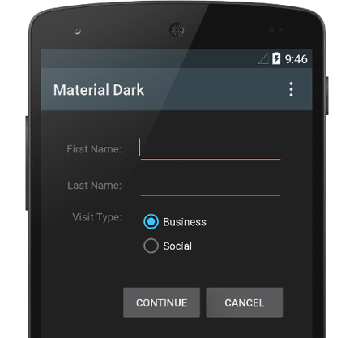
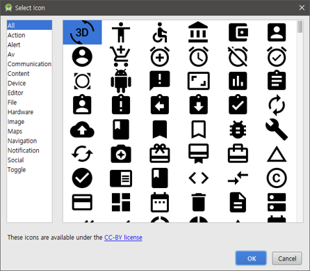
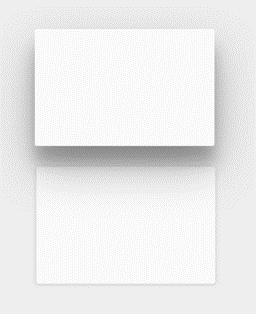
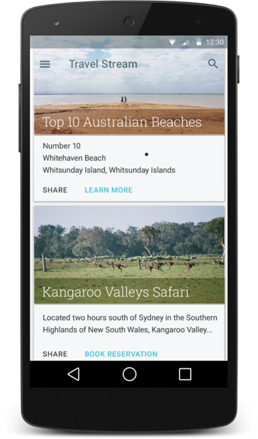
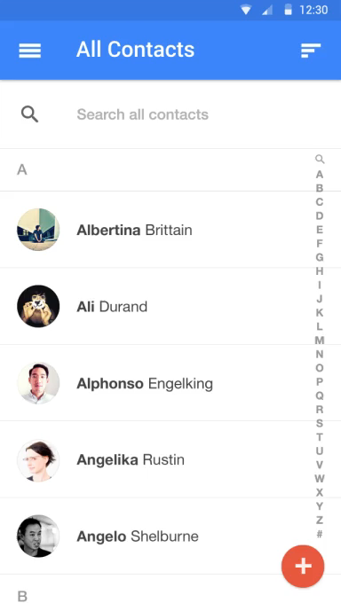
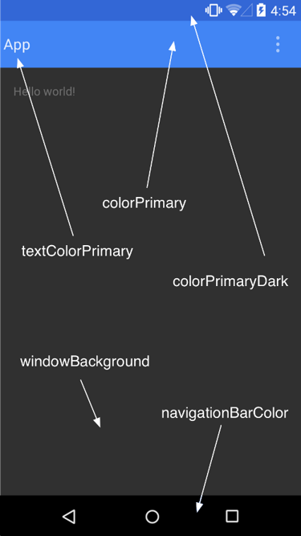
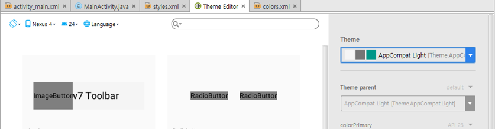
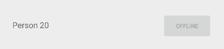

layout: true .top-line[] --- class: center, middle # 머티리얼 디자인 --- ## 머티리얼 디자인 * 머티리얼 디자인은 플랫폼 및 기기 전반의 표현 방식, 모션 및 상호 작용 디자인에 대한 종합적인 지침 머티리얼 테마 | 벡터 드로어블 | 뷰 그림자 -----------|-----------|------------- <img src="images/material1.png" width=200px> |  |  .footnote[https://developer.android.com/design/material/index.html?hl=ko] --- ## 머티리얼 디자인 목록 및 카드 | 애니메이션 ----------|--------- <img src="images/materiallist.png" width=200px> | [애니메이션 보기](https://developer.android.com/design/material/videos/ContactsAnim.mp4?hl=ko) --- ## 머티리얼 테마 적용 * res/values/styles.xml ```xml <resources> <!-- inherit from the material theme --> <style name="AppTheme" parent="android:Theme.Material"> <!-- Main theme colors --> <!-- your app branding color for the app bar --> <item name="android:colorPrimary">@color/primary</item> <!-- darker variant for the status bar and contextual app bars --> <item name="android:colorPrimaryDark">@color/primary_dark</item> <!-- theme UI controls like checkboxes and text fields --> <item name="android:colorAccent">@color/accent</item> </style> </resources> ```  * Theme editor  --- ## 머티리얼 테마 적용(AppCompat인 경우) * res/values/styles.xml ```xml <resources> <!-- Base application theme. --> <style name="AppTheme" parent="Theme.AppCompat.Light.DarkActionBar"> <!-- Customize your theme here. --> <item name="colorPrimary">@color/colorPrimary</item> <item name="colorPrimaryDark">@color/colorPrimaryDark</item> <item name="colorAccent">@color/colorAccent</item> </style> </resources> ``` --- ## RecyclerView * ListView의 더욱 향상되고 유연해진 버전 - 한정된 수의 뷰를 유지함으로써 매우 효율적으로 스크롤할 수 있는 큰 데이터 집합을 표시하기 위한 컨테이너 - 런타임에 요소가 변경되는 데이터 컬렉션이 있는 경우 RecyclerView 위젯을 사용 - 어댑터와 레이아웃 관리자를 지정하여 사용 <img src="images/recyclerview2.png" width=600px> <img src="images/recyclerview.png" width=200px style="top:100px; right:50px; position:absolute;"> .footnote[https://developer.android.com/training/material/lists-cards.html?hl=ko https://guides.codepath.com/android/using-the-recyclerview] --- ## RecyclerView * 주요 클래스 - RecyclerView.Adapter – 데이터를 관리하고 뷰에 연결 시키는 역할 - RecyclerView.ViewHolder – 항목을 보여줄 뷰를 담아두는 상자 - LayoutManager – 리스트의 항목 위치를 관리 * RecyclerView 사용 1. RecyclerView support library를 gradle build file에 추가 2. 데이터 소스로 사용할 모델 클래스 정의 3. RecyclerView를 레이아웃에 추가 4. 아이템 표시를 위한 커스텀 row layout XML을 추가 5. RecyclerView.Holder와 RecyclerView.Adapter를 생성 6. 어댑터와 RecyclerView 연결 --- ## RecyclerView * LayoutManager - LinearLayoutManager - GridLayoutManager - StaggeredGridLayoutManager <img src="images/staggered.png" width=200px> --- ## RecyclerView 1. RecyclerView support library를 gradle build file에 추가 - app/build.gradle ```java dependencies { ... compile 'com.android.support:recyclerview-v7:25.0.1' } ``` - 버전은 compileSdkVersion과 동일한버전 사용해야 함 2. 데이터 소스로 사용할 모델 클래스 정의 - 예) Contact 클래스 ```java public class Contact { private String mName; private boolean mOnline; ...생략... } ``` .footnote[https://github.com/jyheo/AndroidTutorial/blob/master/MaterialTest/app/src/main/java/com/example/jyheo/materialtest/Contact.java] --- ## RecyclerView 3. RecyclerView를 레이아웃에 추가 ```xml <android.support.v7.widget.RecyclerView android:id="@+id/rvContacts" android:scrollbars="vertical" android:layout_width="match_parent" android:layout_height="match_parent" /> ``` .footnote[https://github.com/jyheo/AndroidTutorial/blob/master/MaterialTest/app/src/main/res/layout/activity_main.xml] --- ## RecyclerView .left-column-50[ 4. 아이템 표시를 위한 커스텀 row layout XML을 추가 res/layout/item_contact.xml  ] .right-column-50[ ```xml <?xml version="1.0" encoding="utf-8"?> <LinearLayout xmlns:android="http://schemas.android.com/apk/res/android" android:orientation="horizontal" android:layout_width="match_parent" android:layout_height="wrap_content" android:paddingTop="10dp" android:paddingBottom="10dp" > <TextView android:id="@+id/contact_name" android:layout_width="0dp" android:layout_height="wrap_content" android:layout_weight="1" /> <Button android:id="@+id/message_button" android:layout_width="wrap_content" android:layout_height="wrap_content" android:paddingLeft="16dp" android:paddingRight="16dp" android:textSize="10sp" /> </LinearLayout> ``` ] .footnote[https://github.com/jyheo/AndroidTutorial/blob/master/MaterialTest/app/src/main/res/layout/item_contact.xml] --- ## RecyclerView 5. RecyclerView.Holder와 RecyclerView.Adapter를 생성 --- ## RecyclerView - ViewHolder * 뷰를 담아 두는 보관 상자 ```java public class ContactsAdapter extends RecyclerView.Adapter<ContactsAdapter.ViewHolder> { * public static class ViewHolder extends RecyclerView.ViewHolder implements View.OnClickListener { public TextView nameTextView; public Button messageButton; public ViewHolder(Context context, View itemView) { super(itemView); nameTextView = (TextView) itemView.findViewById(R.id.contact_name); messageButton = (Button) itemView.findViewById(R.id.message_button); this.context = context; messageButton.setOnClickListener(this); } @Override public void onClick(View view) { int position = getLayoutPosition(); Toast.makeText(context, nameTextView.getText() + Integer.toString(position), Toast.LENGTH_SHORT).show(); } } // ... } ``` .footnote[https://github.com/jyheo/AndroidTutorial/blob/master/MaterialTest/app/src/main/java/com/example/jyheo/materialtest/ContactsAdapter.java] --- ## RecyclerView - Adapter ```java public class ContactsAdapter extends RecyclerView.Adapter<ContactsAdapter.ViewHolder> { // ... 생성자, 멤버 변수 선언 등 생략 @Override // 아이템을 위한 뷰를 만들어서 뷰홀더에 넣어서 리턴 * public ContactsAdapter.ViewHolder onCreateViewHolder(ViewGroup parent, int viewType) { Context context = parent.getContext(); LayoutInflater inflater = LayoutInflater.from(context); View contactView = inflater.inflate(R.layout.item_contact, parent, false); ViewHolder viewHolder = new ViewHolder(context, contactView); return viewHolder; } @Override // 뷰홀더의 뷰에 position에 해당하는 데이터를 입력 * public void onBindViewHolder(ContactsAdapter.ViewHolder viewHolder, int position) { Contact contact = mContacts.get(position); TextView textView = viewHolder.nameTextView; textView.setText(contact.getName()); Button button = viewHolder.messageButton; button.setText("Message"); } } ``` .footnote[https://github.com/jyheo/AndroidTutorial/blob/master/MaterialTest/app/src/main/java/com/example/jyheo/materialtest/ContactsAdapter.java] --- ## RecyclerView 6. 어댑터와 RecyclerView 연결 ```java public class MainActivity extends AppCompatActivity { @Override protected void onCreate(Bundle savedInstanceState) { super.onCreate(savedInstanceState); setContentView(R.layout.activity_main); RecyclerView rvContacts = (RecyclerView) findViewById(R.id.rvContacts); // Initialize contacts contacts = Contact.createContactsList(20); // Create adapter passing in the sample user data ContactsAdapter adapter = new ContactsAdapter(this, contacts); // Attach the adapter to the recyclerview to populate items * rvContacts.setAdapter(adapter); // Set layout manager to position the items * rvContacts.setLayoutManager(new LinearLayoutManager(this)); } ArrayList<Contact> contacts; } ``` .footnote[https://github.com/jyheo/AndroidTutorial/blob/master/MaterialTest/app/src/main/java/com/example/jyheo/materialtest/MainActivity.java] --- ## RecyclerView – Item Changed * 항목을 추가/삭제 등의 변경이 있을 때 adapter에게 알려줘야 함 Method | Description ----------------------------|--------------------------------- notifyItemChanged(int pos) | pos위치의 item이 변경되었음을 알림 notifyItemInserted(int pos) | pos위치에 새로 item이 추가되었음을 알림 notifyItemRemoved(int pos) | pos위치의 item이 데이터 셋에서 삭제되었음을 알림 notifyDataSetChanged() | 데이터 셋에 어떠한 변경이 있음을 알릴 때. 가급적 사용 자제 ```java // Add a new contact contacts.add(0, new Contact("Barney", true)); // Notify the adapter that an item was inserted at position 0 adapter.notifyItemInserted(0); ``` --- ## RecyclerView – Item Decoration * 아이템 주변에 여백 추가하는 데코레이션 ```java // 데코레이션 정의 public class MarginItemDecoration extends RecyclerView.ItemDecoration { private final int mVerticalSpaceHeight; public MarginItemDecoration(int mMarginSize) { this.mVerticalSpaceHeight = mMarginSize; } @Override public void getItemOffsets(Rect outRect, View view, RecyclerView parent, RecyclerView.State state) { outRect.bottom = mVerticalSpaceHeight; outRect.right = mVerticalSpaceHeight; outRect.left = mVerticalSpaceHeight; outRect.top = mVerticalSpaceHeight; } } ``` ```java // 사용 RecyclerView.ItemDecoration itemDecoration = new MarginItemDecoration(20); rvContacts.addItemDecoration(itemDecoration); ``` .footnote[https://github.com/jyheo/AndroidTutorial/blob/master/MaterialTest/app/src/main/java/com/example/jyheo/materialtest/MarginItemDecoration.java] --- ## CardView * 둥근 모서리, 그림자를 갖는 뷰 컨테이너 * ListView나 RecyclerView의 항목을 나타내기 위해 사용됨 --- ## CardView * app/build.gradle ```java dependencies { ... compile 'com.android.support:cardview-v7:25.0.1' } ``` * 레이아웃 ```xml *<android.support.v7.widget.CardView xmlns:card_view="http://schemas.android.com/apk/res-auto" xmlns:android="http://schemas.android.com/apk/res/android" android:layout_width="match_parent" android:layout_height="wrap_content" card_view:cardBackgroundColor="#E6E6E6" card_view:cardCornerRadius="8dp" card_view:cardElevation="8dp"> <RelativeLayout ... > *</ android.support.v7.widget.CardView> ``` ??? 카드뷰로 만들고 싶은 뷰(여기에서는 RelativeLayout)를 CardView로 감싸주면 됨.